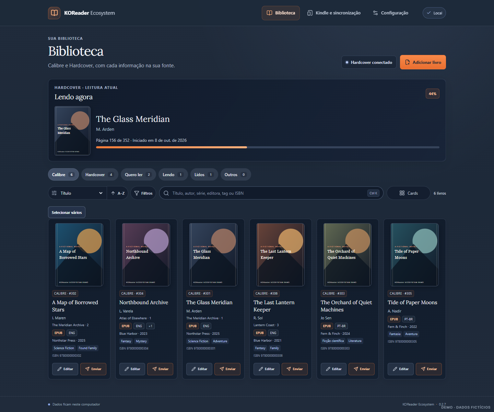

Organize sua biblioteca
Encontre livros do Calibre, edite metadados e revise alterações antes de aplicá-las.
Seus livros vivem em lugares diferentes. O KOReader Ecosystem ajuda a aproximar o Calibre, o Kindle e suas plataformas de leitura — com você no controle.
Gratuito e open source · Windows x64 · Projeto em estágio inicial
Uma ponte entre as ferramentas que você já usa, feita para deixar sua biblioteca mais fácil de cuidar.
Encontre livros do Calibre, edite metadados e revise alterações antes de aplicá-las.
Envie um ebook pelo USB com confirmação, backup anterior e tentativa de verificação da cópia.
Consulte estantes do Hardcover e use o plugin KOReader para enviar progresso pela rede.
Sua biblioteca Calibre em uma interface feita para encontrar, revisar e organizar.
KO / LIBRARY VIEW
Conecte o que já faz parte da sua leitura. Nosso objetivo é ampliar as possibilidades com transparência sobre o que cada serviço permite.
Consulte o catálogo e gerencie metadados compatíveis.
Histórico local para revisão e plugin separado para Hardcover.
Consulte estantes e configure o plugin para enviar progresso.
Importação CSV revisável de Goodreads, StoryGraph e Maratona, com exportação compatível com Goodreads.
Não para consultar e organizar sua biblioteca Calibre. A conta é necessária apenas para os recursos que dependem do Hardcover.
Não. Atualmente há importação revisável por CSV; sincronização direta com esses serviços não está disponível.
Os arquivos continuam na sua biblioteca Calibre. O aplicativo acessa a biblioteca local e pode enviar um ebook ao Kindle conectado por USB.
Sim. O KOReader Ecosystem é open source sob licença MIT.
Teste o aplicativo, conte o que funciona para você ou contribua com código, documentação e acessibilidade.